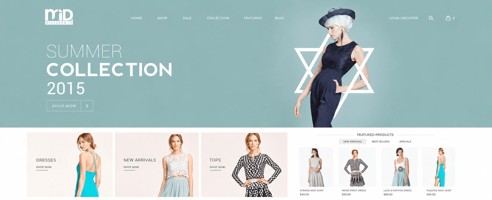
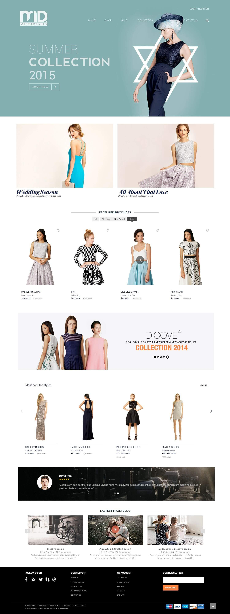
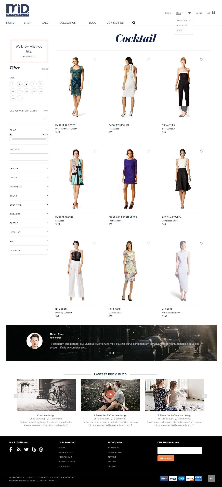

Shoppers need routes by collection, designer and occasion without losing the emotional pull of the imagery.
← Back to workWear the moment.
Mistaken ID · Designer Fashion Rental
Wear the moment.
Not the commitment.

Project overview
Designer choice.
Without ownership friction.
Choosing an occasion look is emotional. Renting it adds practical questions around fit, price, availability and return dates.
We designed a fashion-led rental experience that creates desire up front, then gives shoppers the filters and confidence needed to find the right look.
- Platform
- Rental Commerce
- Catalogue
- Designer Fashion
- Discovery
- Occasion + Fit
- Build
- Responsive Web
The organising idea
Start with aspiration.
Resolve every practical detail.
Editorial collections and designer-led product presentation make the experience feel like fashion—not inventory.
Size, dates, price, colour, formality, body type and occasion filters make that inspiration actionable.
The rental challenge
Create desire quickly.
Remove uncertainty carefully.
Fit, availability window, price and returns must feel as natural as browsing a conventional store.
The rental journey
See it. Refine it.
Reserve it. Return it.
- 01
Discover
Campaigns, edits and popular styles create multiple ways into the range.
- 02
Refine
Detailed filters narrow hundreds of possibilities to relevant looks.
- 03
Schedule
Delivery and return dates make availability part of product discovery.
- 04
Reserve
Rental pricing, wishlists and account tools support a confident decision.
The fashion experience
Editorial at entry.
Precise at selection.
The homepage builds the brand world through collections and designer edits. The category experience then shifts into a powerful, decision-oriented rental interface.
Fashion storefrontSeasonal campaigns, edits and featured designers

Rental catalogueOccasion, fit, price and date-led discovery

The decision system
Every filter answers
a real wardrobe question.
Occasion
Start from where the outfit needs to work—cocktail, wedding or everyday.
Fit
Size, length, sleeve, neckline, age and body type improve relevance.
Style
Designer, colour, trend and formality protect personal expression.
Availability
Date and price controls connect fashion desire to rental reality.
Designed with restraint
The interface steps back.
The fashion steps forward.
A pale editorial palette, generous whitespace and fine typography give designer imagery room to lead while dark navigation and precise controls maintain clarity.

The outcome
A rental platform.
With a fashion point of view.
A responsive experience that balances campaign-led desire with the detailed filtering and planning required to rent designer fashion confidently.
Stronger discovery
Collections and edits introduce the catalogue through recognisable moments.
Better relevance
Deep filters help shoppers reach appropriate looks without endless browsing.
Clearer rental
Dates, prices and account tools make the service model understandable.
The right look.For exactly as long as needed.
Building a new commerce model?